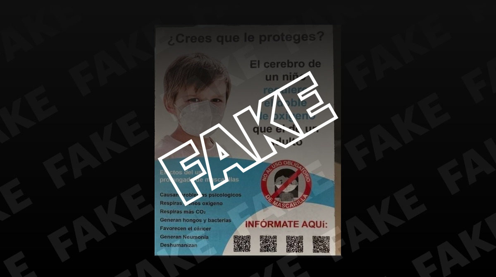

El uso de mascarillas no provoca neumonía ni cáncer en niños
Nos habéis preguntado a través de nuestro servicio de verificación de WhatsApp (+34 627 28 08 15) por una imagen, difundida por redes sociales, en la que se habla de los supuestos problemas que ocasionan las mascarillas en los niños.
En concreto, en el contenido se asegura que los niños que las llevan 'respiran menos oxígeno y más CO2' y que 'el uso prolongado' de mascarillas 'genera neumonía, genera hongos y bacterias y favorece el cáncer'.Pero es falso.Te lo explicamos.
Una de las afirmaciones falsas de la imagen que hemos recibido es que el uso prolongado de las mascarillas 'genera neumonía'.Pero el pediatra Joan Figuerola, presidente de la Sociedad Española de Neumología Pediátrica, explica a Newtral.es que 'no hay ningún trabajo científico que pruebe que las mascarillas causan neumonía'.
Las bacterias son una de las principales causas de las neumonía y, aunque en la imagen también se asegura que las mascarillas 'generan hongos y bacterias', Figuerola recuerda que, si mantenemos las medidas de higiene y las recomendaciones sanitarias, 'en las mascarillas no tiene por qué haber más bacterias o gérmenes de los que colonizan a diario nuestra boca'.
Desde el Ministerio de Sanidad recuerdan que 'el uso de mascarilla deberá ir siempre asociado al seguimiento estricto de las medidas generales de higiene'.Por ejemplo, antes de ponerse una mascarilla hay que lavarse bien las manos con agua y jabón o con una solución hidroalcohólica.
También hay que desechar la mascarilla cuando esté húmeda y evitar reutilizar las mascarillas de un solo uso.Por cuestiones de higiene, se recomienda además no usar la mascarilla por un tiempo superior a 4 horas y en caso de que se humedezca o deteriore por el uso, se recomienda sustituirla por otra.
La OMS también aconseja lavar las mascarillas de tela 'con jabón o detergente y preferiblemente con agua caliente (al menos 60 grados) como mínimo una vez al día' y desechar las médicas o quirúrgicas después de usarlas.
Desde el Colegio Oficial de Farmacéuticos de Zaragoza señalan además que 'lo ideal es guardar la mascarilla en una bolsa de tela o sobre de papel ya que el plástico no transpira y puede favorecer que aparezcan bacterias'.
'El cerebro de un niño requiere el doble de oxígeno que el de un adulto', se lee en la imagen que estamos verificando, en la que se asegura que si llevas mascarilla 'respiras menos oxígeno'.
Figuerola explica que, aunque es verdad que un recién nacido, por ejemplo, tiene necesidades metabólicas aumentadas (necesita más nutrientes) para su crecimiento y desarrollo, esto 'no significa en ningún caso que con las mascarillas respiren menos oxígeno'.'No tiene nada que ver una cosa con la otra', insiste.
El neuropediatra Alfonso Amado, miembro de la European Pediatric Neurology Society, señala a Newtral.es que, 'en todo caso, la cantidad de oxígeno es la misma y que las mascarillas frenan el paso de las partículas pero no del oxígeno'.
Tal y como detalló a Newtral.es el doctor y catedrático de Salud Pública Francisco Guillén Grima, también director de Medicina Preventiva en la Clínica de la Universidad de Navarra, 'todas las mascarillas que se encuentran el mercado retienen las partículas, pero dejan pasar los gases, entre los que se encuentra el oxígeno y el CO2'.Por tanto, no se da una disminución de oxígeno en los tejidos, es decir, hipoxia.
[Ni causan hipoxia ni han muerto niños por usarlas en Alemania: los bulos sobre las mascarillas durante la pandemia de COVID-19]
Según Guillén, las principales causas de hipoxia son 'enfermedades pulmonares como la EPOC (Enfermedad Pulmonar Obstructiva crónica), enfisema, bronquitis, edema de pulmón, enfermedades cardíacas, apnea del sueño, fibrosis pulmonar'.
También puede producirse esta falta de oxígeno al 'estar en lugares muy elevados en donde hay poco oxígeno, lo que se denomina mal de altura, por ejemplo en el Himalaya, La Paz (Bolivia), o en Machu Picchu (Perú)' e, incluso, como resultado del tratamiento con 'algunos analgésicos muy potentes', añade Guillén.
Pero no hay relación entre las mascarillas y la falta de oxígeno.De hecho, aunque es posible que se respire una pequeña cantidad de nuestro propio aire con la mascarilla, y ese aire propio lleva algo más de CO2 que el aire ambiente, 'el efecto es muy pequeño y no conlleva cifras patológicas de CO2 en sangre', matiza a Newtral.es Joaquín Gea, jefe de Neumología del Hospital del Mar (Barcelona) .
Las afirmaciones anteriores son aplicables 'a alguien sano o con una enfermedad crónica leve o moderada pero si es grave, normalmente ya tiene un oxígeno en sangre muy bajo y/o un CO2 muy alto y el pequeño factor de la mascarilla puede provocarle algún problema', precisa el neumólogo.
La Organización Mundial de la Salud (OMS) también desmintió en junio tanto la intoxicación por CO2 (hipercapnia) como la hipoxia cuando las mascarillas homologadas 'se llevan puestas correctamente'.
Además,desde la Sociedad Española de Neumología y Cirugía Torácica (SEPAR) recomiendan a la población general el uso de mascarillas homologadas para prevenir la COVID-19, incluidos los niños.
La presidenta de SEPAR María Jesús Rodríguez Nieto, neumóloga en el Hospital Universitario Fundación Jiménez Díaz de Madrid, ya destacó a Newtral.es que las mascarillas 'son imprescindibles para vivir en estos tiempos de COVID-19 hasta que tengamos otros métodos mejores'.
Asimismo, según el contenido que hemos recibido, las mascarillas 'favorecen el cáncer'.Sin embargo, como ya explicamos en Newtral.es, no hay evidencias científicas que avalen esta afirmación.
Además, en los últimos meses también se han difundido otros contenidos falsos en los que se asevera que las mascarillas 'aumentan el riesgo de tumores', pero también lo hemos desmentido.En la imagen que estamos verificando también se dice que las mascarillas causan 'problemas psicológicos en los niños', pero no se aporta ninguna evidencia al respecto.
En resumen, no hay pruebas de que el uso prolongado de mascarillas provoque enfermedades como la neumonía en niños.Las autoridades sanitarias aconsejan el uso de las mascarillas en la población en general, incluidos los niños a partir de seis años, como medida de prevención contra la COVID-19.
Si escuchas lo que dice un político y crees que es mentira, o te llega algo que tiene pinta de ser un fake, escríbenos al +34 627 28 08 15 con tu consulta o pincha sobre el número si nos lees desde tu móvil para que lo verifiquemos por ti.
Posted On: 2021-03-05T00:00:00
Posted By: Por Elena Turrión

Content Date: 2021-03-05
Download Date: 2021-04-21
Document ID: L0C04ALML